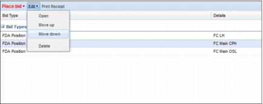
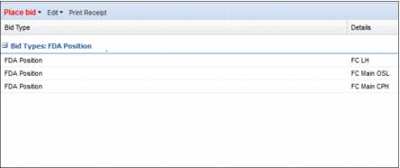

Change bid priority You can change the bid priority the following way: • Select the item you want to give a higher or lower priority • Click on the Edit menu and select either Move up or Move down Example: FC Main CPH with priority 2 is selected and Move down is chosen.  The result is that FC Main CPH now has a priority 3: 